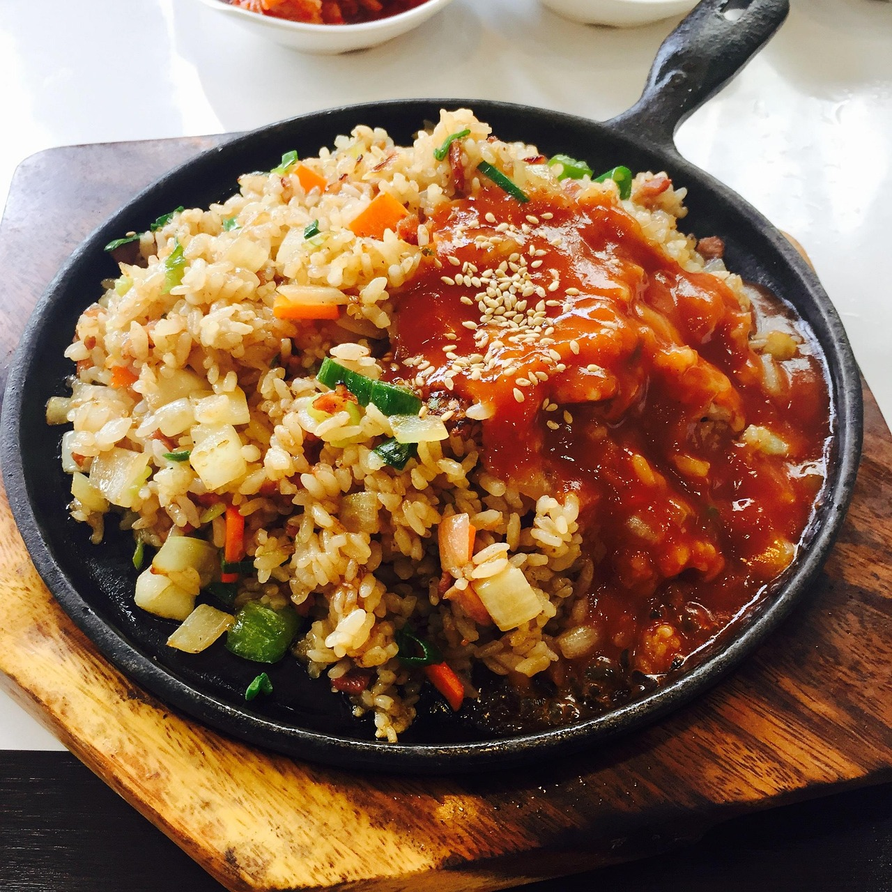

Nasi Goreng
40 Min.
simpel
25.06.2025
Zutaten für
| 75 | g Langkornreis |
| Salz | |
| 3/4 | EL Erdnussöl |
| 1/4 | Zwiebel |
| 3/4 | Knoblauchzehe |
| 1/4 | Chilisote |
| 7 | g Ingwer |
| 50 | g Möhren |
| 3/4 | Lauchzwiebel |
| 50 | Spargelbohnen oder Prinzess-Bohnen |
| 1/2 | Hähnchenbrustfilet |
| 1 | EL Sojasauce |
| 1/2 | EL Ketchup Manis |
Zubereitung
ca. 15 Minuten
Gesamtzeit ca. 20 Minuten
Erhitze etwas Öl in einer Pfanne bei mittlerer Hitze.
Füge die gehackte Zwiebel und Knoblauch hinzu und brate sie an.
Die gewürfelte Karotte und die Erbsen hinzufügen. (3-4 Minuten anbraten).
Die Gemüse an den Rand der Pfanne geben und die Eier in die Mitte zugeben.
Gekochter Reis wird dazugegeben und durchgemischt, bis der Reis leicht erwärmt wird.
Anschließend gebe die Sojasauce und das Ketchup hinzu.
Zum Schluss die frisch gehackten Frühlingszwiebeln unterheben und servieren. (Würzung individuell).
Rezept erstellt von
 Tuncay Cubukcu
Tuncay Cubukcu